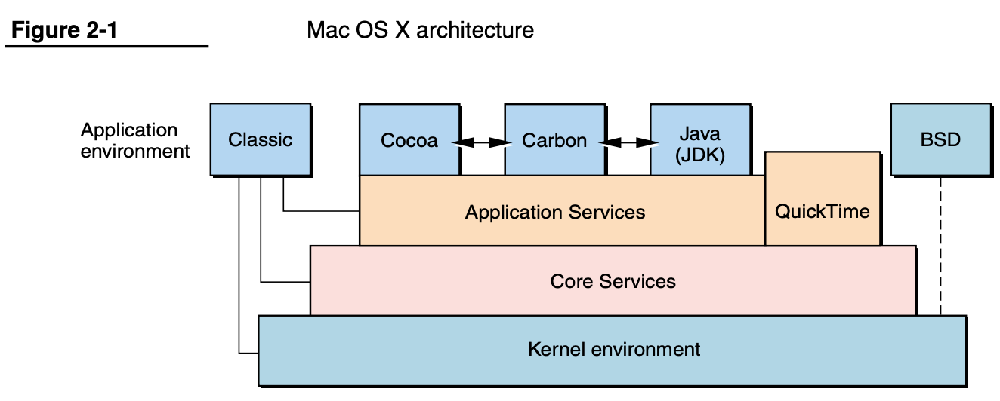
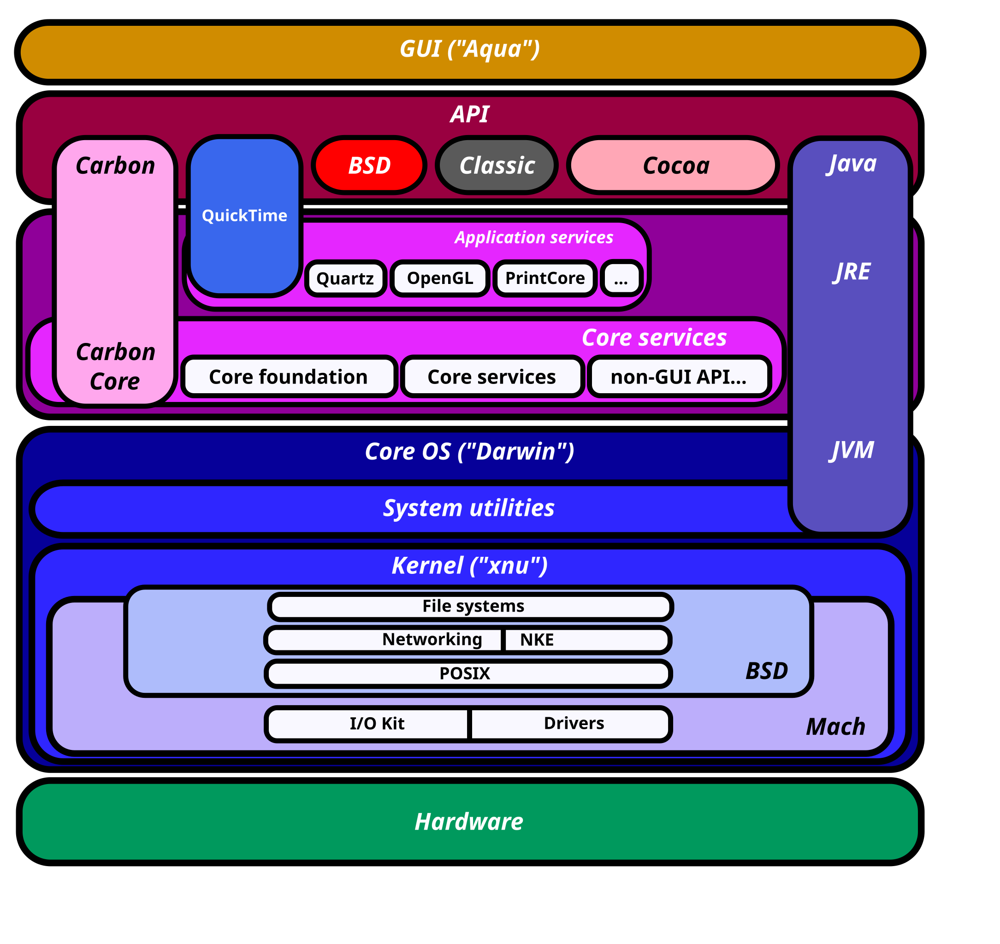

macOS
- macOS
- 背景
NeXT- 苹果早期，其创始人乔布斯离开苹果，创办了：
NeXT NeXT公司生产NeXT计算机和NeXTstation- 它们运行在叫做
NeXTSTEP的操作系统之上
- 它们运行在叫做
- 苹果早期，其创始人乔布斯离开苹果，创办了：
NeXTSTEP- 核心组件
CocoaMachIOKit- （
Xcode的）Interface Builder
- 特性
- 采用
Mach微内核 - 使用
Objective-C作为开发语言 - 面向对象思想贯穿整个操作系统
- 设备驱动开发是一个面向对象的框架，叫做
DriverKit
- 采用
- 核心组件
- 操作系统名称演化历史
- 概述
Mac OS Classic->Mac OS X->OS X->macOS
- 详解
Mac OS Classic- 诞生于苹果，拥有伟大的 GUI 却是一个相对粗糙且很不成熟的操作系统
Mac OS X- 背景
Mac OS Classic：一个拥有伟大的 GUI 但设计糟糕NeXTSTEP：一个设计很棒但 GUI 平淡
- 融合：
Mac OS Classic+NeXTSTEP=>Mac OS X - 结果：有了
Mac OS Classic的GUI以及NextStep的架构
- 背景
OS XOS X的架构- 
macOS
- 表格
- 概述
- 背景
| 时间段 | MacOS名称 | 说明 |
|---|---|---|
| 创建 ~ 2001 年 | MacOS Classic | 古典 MacOS |
| 2001年 ~ 2011 年 | Mac OS X | NeXTSTEP 与 MacOS Classic 合并之后的版本 |
| 2012 年 ~ 2015 年 | OS X | 这是最后一个以猫科动物命名的 OS 版本，此后开始以加州地标命名 |
| 2016 年至今 | macOS | 便于与iOS、tvOS、watchOS 命名统一 |
- 架构
macOS架构- 图
- 
- 文字
- 闭源的
User Experience Layer=用户UI层- 包括
Aqua、Dashboard、Spotlight以及一些特性- 在iOS中，用户体验完全取决于SpringBoard，同时，iOS中Spotlight也是支持的
- 即：
- 对应关系：
macOS中的Aqua~=iOS中的SpringBoard- 针对的操作
macOS中的Aqua：鼠标iOS中的SpringBoard：触屏
- 针对的操作
- 对应关系：
- 包括
Application Frameworks layer=应用框架层- 包括
Cocoa、Carbon以及Java- 然而在
iOS中，只有Cocoa（严格来讲，Cocoa Touch是Cocoa的派生物）
- 然而在
- 包括
Core Frameworks=核心框架层==图形和媒体层=Graphic and Media layer- 包括
核心框架、Open GL以及Quick Time
- 包括
- 开源的
Darwin=系统核心层- 操作系统核心
kernel以及UNIX shell的环境 - 详见：
- 操作系统核心
- 闭源的
- 图
macOS中查看Darwin版本
- 举例：
macOS v13.6.2的Mac M2 Max中- uname相关输出是：
➜ ~ uname -v Darwin Kernel Version 22.6.0: Thu Nov 2 07:43:25 PDT 2023; root:xnu-8796.141.3.701.17~6/RELEASE_ARM64_T6020- 和：
➜ ~ uname -r 22.6.0
- 和：
- 由此得知：
Darwin内核的版本是：22.6.0
- 以及相关信息：
➜ ~ sw_vers ProductName: macOS ProductVersion: 13.6.2 BuildVersion: 22G320
- uname相关输出是：